いつもの手紙をちょっと特別に
便箋にはさむ香る和紙の猫の文香
無料
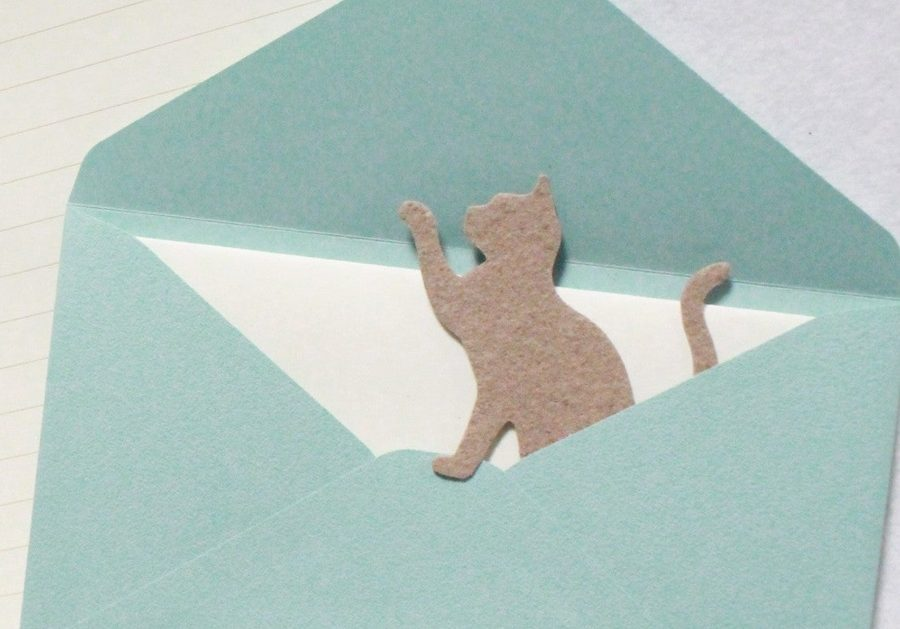
※1 Makuake（2026年2月終了）での目標金額に対する達成率
※2 兵庫県ホームページ「線香」（2024年10月更新）より
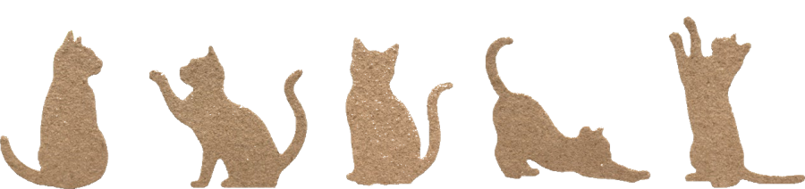
推しへの手紙
こんな悩みはありませんか
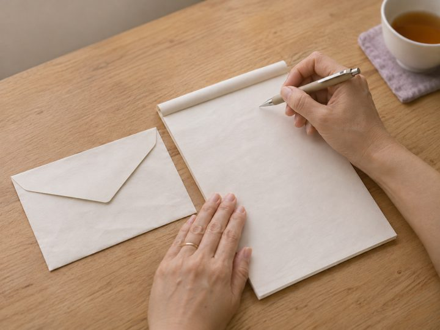
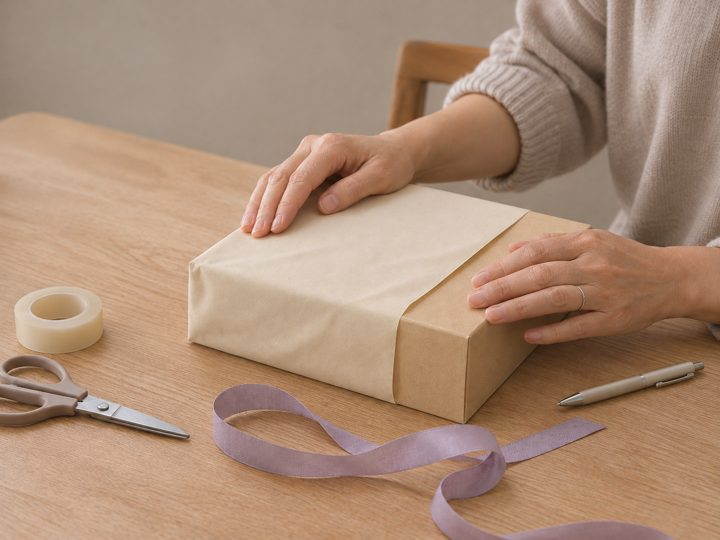
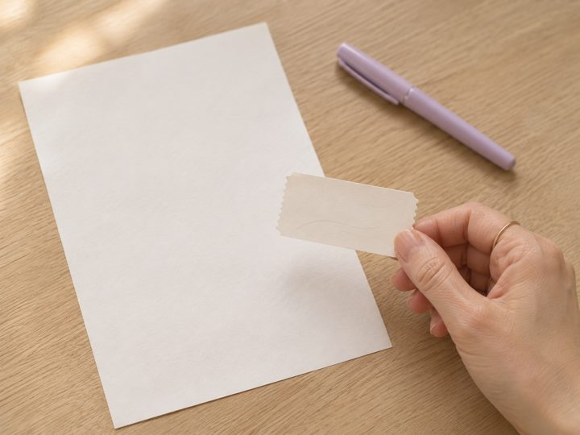
NeKouなら
1匹はさむだけで
開けた瞬間が華やぐ
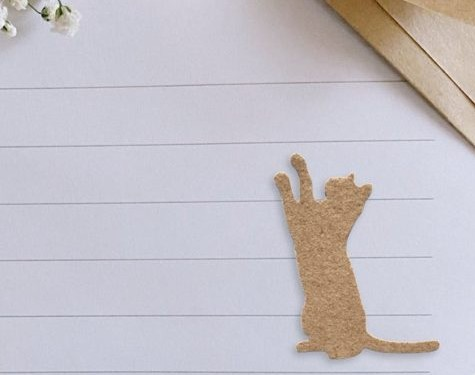
書き終えた便箋にNeKouを1匹だけ。手紙はそのままで、封を開けると小さな猫がのぞきお香の香りが届きます。
NeKouなら
紙1枚だから
気軽に添えられる
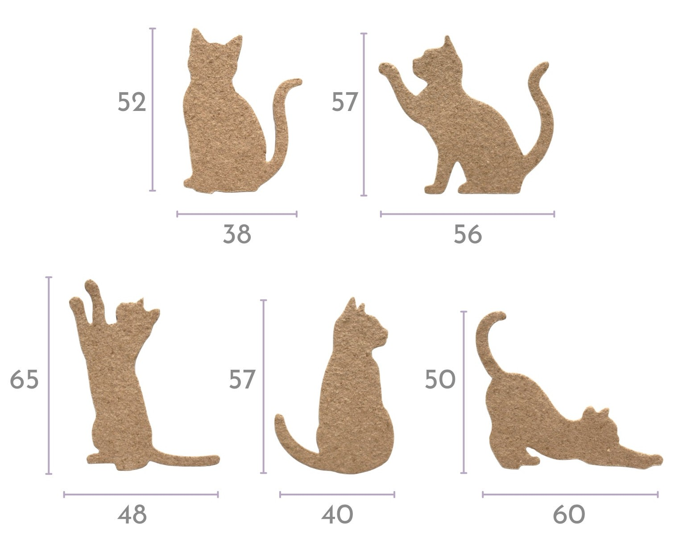
物を贈るほど大げさにならず、便箋に1枚はさむだけ。厚みも重さもほとんどなく郵便料金もほとんど変わりません。
NeKouなら
5つのポーズから
その日の1匹を

ポーズの違う5匹から推しや手紙の内容に合わせて選べます。次の手紙には違う子を。
NeKouが合う5つの手紙
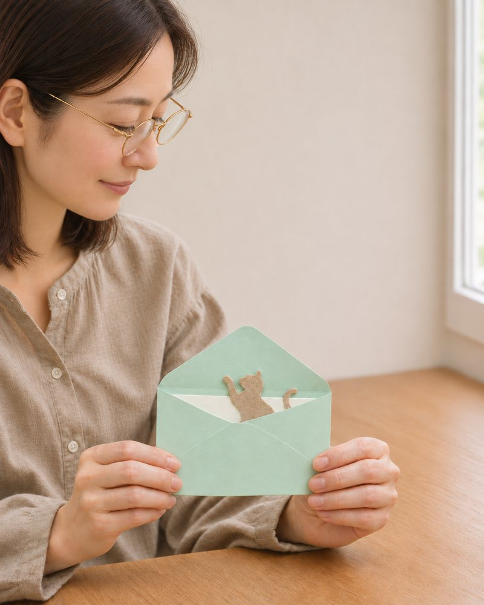
余韻が残るうちに書く感想
舞台の余韻が残るうちに書く手紙に。5つのポーズからその日の舞台に合う1匹を選んで。
新刊を読んだ日の
ファンレター
読み終えた日の気持ちを書いた便箋に1匹のせて。
会場で聴いた1曲の話
会場で聴いた1曲の感想を書く手紙に。職人が仕立てた和の香りが手紙の言葉を引き立てます。
一緒に観た日のお礼状
遠征や観劇に誘ってくれた友だちへの手紙に。開けたときに小さな猫が顔を出します。
手紙を書く夜のおとも
好きな人のことを思いながら便箋に向かう時間に。書き終えた手紙に1匹のせて封をする。そこまでがひとつの楽しみです。
観劇のあとの推しへの手紙
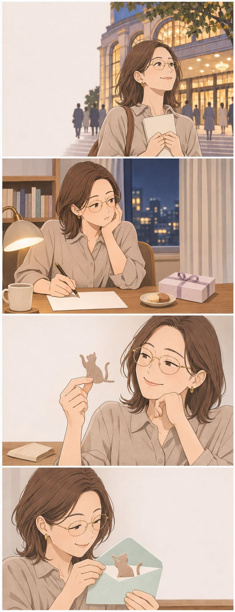
今日の舞台最高だった…感想は書けたけど
プレゼントは負担かな…この子を1匹
そえてみようこの1通に
気持ちを込めて
※イメージです
いただいたお声
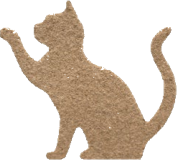
推しへの手紙に入れて使っている。香りの主張が強すぎないところが気に入っている。
ご購入者さまのお声（要約）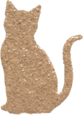
「ポーズが複数なのが良い。」
Makuakeでのコメントより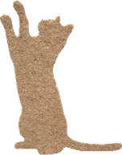
「かわいさに一目惚れ。」
Makuakeでのコメントより猫の形で1枚154円から
| 一般的な文香 | NeKou | |
|---|---|---|
| 1枚あたり | 約98〜220円 | 154円〜 |
| 形 | 四角など | 5ポーズの猫 |
| 送料 | 販売店による （200〜330円が多い） | 1セットから無料 |
※当社調べ（2026年11月・通販で販売されている文香7商品）。NeKouの154円はケースなし10枚をこのページのクーポン（30%OFF）で購入した場合
2つから選べて
最大30%OFF
Creemaでの買い方
- 1ボタンを押すとクーポンコードがコピーされ、Creemaの商品ページが開きます
- 2カートに入れて購入へ。はじめての方は会員登録（無料）をします
- 3お会計の「クーポン」欄にコードを貼り付けると、1,540円（ケース入りは1,260円）になります
※Creemaの商品ページでは通常の価格で表示されます。お会計でクーポンを入れたあとの金額をご確認ください。
- Creemaのご購入画面の「クーポン」欄に入力してください（1回のご注文で1枚）
- NEKOU30Aは2,000円以上・NEKOU25Aは1,000円以上のご注文で使えます
- Creemaでのご購入には会員登録（無料）が必要です
- 有効期限：2027年2月15日まで
- 送料無料・ポストにお届け（匿名配送）・お支払いから3日以内に発送
和紙の猫の文香のこだわり
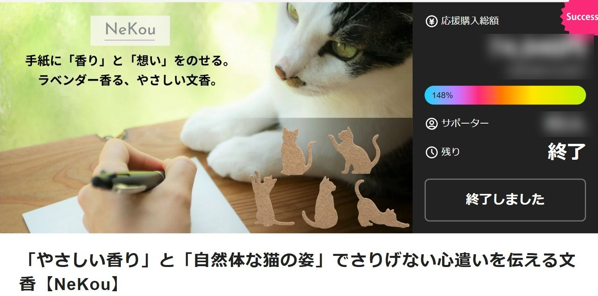
お香を練り込んで漉いた和紙
線香の国内最大の産地である淡路島で、お香の会社が和紙にお香を練り込んで漉く技法でつくっています。
無着色・IFRA基準の香料
色は和紙そのままです。香料は国際的な安全基準（IFRA）に沿ったものを使っています。香りはラベンダーをもとにした落ち着いた和の香りです。
紙の専門店が猫の型を制作
5種類の猫の型と抜きは紙の専門店PAPIER LABO.が手がけました。
便箋に1匹はさむだけ
その日の手紙に合う1匹を選ぶ
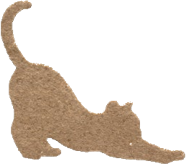
STEP2書き終えた便箋にはさむ
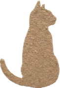
STEP3封をして渡す・送る
手帳や名刺入れにはさむこともできます。燃えない皿の上で火をつけるとお香としても楽しめます（煙が出るので換気をしてください）。
送る前にご確認ください
- 便箋1通に1枚が目安です。
- 布に直接触れると色移りすることがあります。
- 香りを保つため湿気と直射日光を避けて、なるべく密閉して保管してください。
よくある質問
手紙に入れると郵便料金は変わりますか？
NeKouは和紙1枚で重さも厚みもほとんどありません。ふだんの手紙と同じ料金で送れます。
香りはどのくらいしますか？
封を開けたときにふわりと感じる上品な香りです。職人が仕立てた和の香りが手紙の言葉を引き立てます。
どんな香りですか？
ラベンダーを淡路島のお香の職人が落ち着いた和の香りに仕立てています。香水のような華やかさより、お香らしいやわらかさを感じる香りです。
事務所や劇場に送っても大丈夫ですか？
手紙の受け付けのルールは送り先ごとに異なります。手紙以外の同封をお断りしているところもあるので、送る前に公式の案内をご確認ください。
ケース入りとケースなしの違いは？
ケース入りは5枚（5ポーズ×各1枚）が専用のケースに入ったセットです。ケースなしは10枚（5ポーズ×各2枚）で1枚あたりがお得です。どちらも1枚ずつ平袋に入れてお届けします。
届いたNeKouが折れていたら？
到着から14日以内にCreemaのメッセージでご連絡ください。新しいものと交換します。
いつ届きますか？
お支払いの確認から3日以内に発送し、ポストにお届けします。
名前や住所を知られずに買えますか？
Creemaの「あんしん匿名便」でお届けします。購入者と出品者のどちらも名前や住所を相手に知らせずにやりとりできます。
ラッピングはできますか？
ラッピングは承っていません。ケース入りは専用のケースに入っているので、そのまま贈り物にもお使いいただけます。
クーポンはどこで使いますか？
Creemaのご購入画面にある「クーポン」の欄に入力してください。1回のご注文で使えるクーポンは1枚です。
どのように保管すればいいですか？
高温多湿と直射日光を避けて、なるべく密閉できる袋や箱に入れて保管してください。